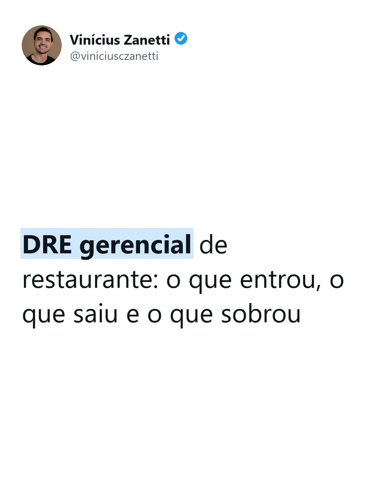

DRE gerencial de restaurante: a conta que mostra se o movimento vira lucro
Restaurante cheio e caixa recebendo bem não dizem se o mês deu lucro. A DRE gerencial diz. Veja a estrutura do livro Restaurante no Controle, linha a linha, com um exemplo de R$ 80 mil por mês.
Publicado em 16/11/2026
Um restaurante que fatura R$ 80 mil por mês parece ir bem. No livro Restaurante no Controle, o consultor Vinícius Zanetti usa esse número para mostrar o contrário: com CMV de 40%, custos fixos de 35% e despesas administrativas de 15%, somados aos impostos e taxas sobre a venda, o negócio está operando no zero, e qualquer imprevisto vira crise.
Quem não monta a DRE gerencial confunde movimento com lucro, como mostra a matéria sobre o dono que vende todo dia e não sabe se dá lucro. A seguir, o que é esse relatório, a estrutura que o livro usa, linha a linha, e o exemplo dos R$ 80 mil montado na tabela.

O que é DRE gerencial?
DRE é a Demonstração do Resultado do Exercício. A versão gerencial junta todas as receitas, custos e despesas do restaurante num período, normalmente o mês, e mostra o resultado real do negócio. Ela responde três perguntas: quanto entrou, quanto saiu e quanto sobrou.
"Antes de qualquer investimento, antes de qualquer expansão, antes de qualquer decisão estratégica relevante, o empresário precisa saber com precisão quanto o seu negócio ganha, quanto gasta e quanto sobra."Vinícius Zanetti, no capítulo Estrutura do livro Restaurante no Controle
Qual a diferença entre DRE gerencial e DRE contábil?
A DRE contábil é feita pelo contador, segue as regras da contabilidade e serve para fisco, banco e obrigações legais. A gerencial é feita para o dono decidir. Por isso pode ter a ordem que faz sentido para a operação. No livro, ela é desenhada para o setor de alimentação: separa primeiro o que varia com a venda, como taxas e CMV, e só depois o que é fixo.
Qual a estrutura da DRE de restaurante?
Esta é a estrutura do Método M.E.G.A., descrita no capítulo Estrutura do livro:
Faturamento bruto
(-) Deduções: impostos, taxas de cartão e taxas de delivery
= Faturamento líquido
(-) CMV
= Margem de contribuição
(-) Custos fixos: mão de obra com provisões, infraestrutura e logística
= Resultado
(-) Saídas não operacionais
= Resultado final
O que entra em cada linha?
- Faturamento bruto. Tudo o que foi vendido no mês, em todos os canais: salão, balcão, delivery próprio e aplicativos.
- Deduções. O que sai da venda antes de o dinheiro ser do restaurante: imposto sobre a venda, taxa da maquininha e comissão da plataforma de delivery.
- Faturamento líquido. O que sobra depois das deduções.
- CMV. O custo da mercadoria vendida, calculado com estoque inicial mais compras menos estoque final. Não é o total de notas do mês, como mostra a matéria sobre o CMV calculado pelas compras.
- Margem de contribuição. O que a venda deixa para pagar a estrutura. A referência da Zatti é 35% no mínimo, e de 50% a 55% é uma margem boa.
- Custos fixos. No livro, três grupos: mão de obra, já com as provisões de férias e 13º; infraestrutura, com limpeza, manutenção, consumo e internet; e logística.
- Resultado. O que a operação gerou no mês.
- Saídas não operacionais. Dinheiro que sai, mas não é custo de fazer e vender comida. Na classificação usada pela Zatti entram, por exemplo, compra de equipamento, parcela de empréstimo, juros e multas, retirada dos sócios e gasto particular pago pela conta da empresa.
- Resultado final. O que de fato sobrou depois de tudo.
A separação das duas últimas linhas evita uma confusão comum. Uma reforma ou a parcela do forno novo podem deixar o caixa do mês negativo sem que a operação dê prejuízo. Misturados, os dois números escondem um ao outro.
DRE de restaurante: um exemplo
Neste exemplo do livro, o restaurante fatura R$ 80 mil por mês, com CMV de 40%, custos fixos de 35% e despesas administrativas de 15%. Os três somam 90%. O livro não detalha as deduções; para a conta fechar no zero, como ele descreve, impostos e taxas teriam de levar os 10% restantes. A tabela usa essa suposição, e todos os percentuais estão sobre o faturamento bruto.
| Linha da DRE, neste exemplo | Valor | % do bruto |
|---|---|---|
| Faturamento bruto | R$ 80.000 | 100% |
| (-) Deduções (suposição) | R$ 8.000 | 10% |
| = Faturamento líquido | R$ 72.000 | 90% |
| (-) CMV | R$ 32.000 | 40% |
| = Margem de contribuição | R$ 40.000 | 50% |
| (-) Custos fixos | R$ 28.000 | 35% |
| (-) Despesas administrativas | R$ 12.000 | 15% |
| = Resultado | R$ 0 | 0% |
A leitura linha a linha mostra o que o faturamento esconde. A margem de contribuição de 50% está na faixa boa. O problema está em dois lugares: o CMV de 40%, acima da faixa de 25% a 33% que a Zatti usa como referência, e uma estrutura fixa que consome metade da venda.
Se o CMV caísse para 33%, ainda neste exemplo, a diferença de 7 pontos sobre R$ 80 mil seria de R$ 5.600 a mais no resultado todo mês. Sem a DRE, o dono só sabe que trabalha muito e o dinheiro não sobra.
Qual a diferença entre DRE e fluxo de caixa?
A DRE mostra se o mês deu lucro. O fluxo de caixa mostra quando o dinheiro entra e sai da conta. Uma venda no cartão de crédito entra na DRE do mês em que foi feita, mas só chega ao caixa quando a operadora repassa. Por isso um restaurante pode ter resultado positivo e faltar dinheiro para o boleto, assunto da matéria sobre capital de giro. O livro trata os dois como instrumentos que andam juntos.
O que o dono de hamburgueria e pizzaria faz com isso
O primeiro passo é separar as contas em categorias fixas, o que o livro chama de plano de contas. Taxa do aplicativo vai em deduções, carne e embalagem no CMV, salário em mão de obra, parcela do empréstimo em saídas não operacionais. Sem essa separação, a DRE vira uma lista de pagamentos.
O segundo é fechar a DRE todo mês, numa data fixa, com o inventário do último dia. No Método M.E.G.A., essa é uma das rotinas mensais da etapa Garante.
O terceiro é usar a margem de contribuição para a próxima pergunta: quanto o restaurante precisa vender para pagar os custos fixos. É o ponto de equilíbrio, e ele sai direto da DRE. O passo seguinte é olhar o CMV com lupa, comparando o que a ficha técnica manda gastar com o que de fato saiu do estoque, como mostra a matéria sobre CMV teórico e CMV real.
A Abrasel, na cartilha sobre CMV, traz outra referência que cabe nessa leitura: CMV mais mão de obra não devem passar de 65% da receita bruta.
Perguntas frequentes
O que é DRE gerencial de restaurante?
É o relatório que junta receitas, custos e despesas do mês e mostra o resultado real do negócio. Serve para o dono decidir, e por isso separa o que varia com a venda, como taxas e CMV, do que é fixo.
Qual a estrutura da DRE de restaurante?
No Método M.E.G.A.: faturamento bruto, menos deduções, igual a faturamento líquido; menos CMV, igual a margem de contribuição; menos custos fixos, igual a resultado; menos saídas não operacionais, igual a resultado final.
Taxa do iFood entra onde na DRE?
Nas deduções, junto com impostos sobre a venda e taxas de cartão. São valores que saem da venda antes de o dinheiro ser do restaurante, e por isso vêm antes do CMV.
Qual a diferença entre DRE e fluxo de caixa?
A DRE mostra se o mês deu lucro, pela data da venda e da despesa. O fluxo de caixa mostra quando o dinheiro entra e sai da conta. Um pode estar positivo e o outro, negativo.
Fontes
- Vinícius Zanetti, Restaurante no Controle: Método M.E.G.A. de gestão para restaurantes (Belo Horizonte, 2026).
- Abrasel, cartilha Custo de Mercadoria Vendida (CMV) para bares e restaurantes (janeiro de 2026).